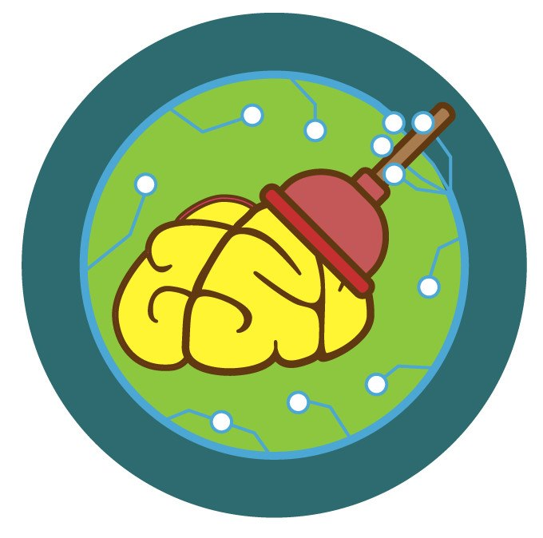
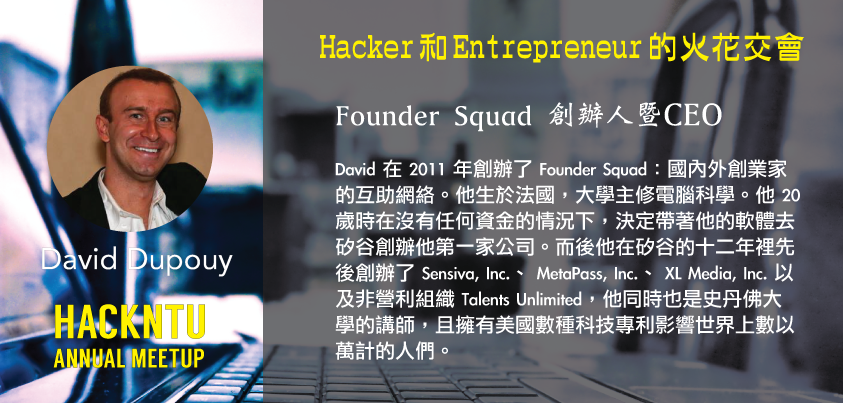

Hi, We are HackNTU !
Found the first big Hackathon in Taiwan Campus.
HackNTU是由學生自發性創辦的非營利組織(曾籌辦台灣第一場大型校園Hackathon)，目標是成為學術界與產業間的溝通橋樑，未來將每年舉辦校園大型Hackathon並於每月定期舉辦開發小聚
" We promote the Hacker Way in Taiwan campus. : ) "
閃電 Hacker 秀作品
主秀講者 (Speaker)

David Dupouy, Founder Squad 創辦人暨CEO
『從 Hacker 到創業家，再成為創業圈的推手－矽谷教我的一門課』
Founder Squad Site LinkDavid 在 2011 年創辦了 Founder Squad：國內外創業家的互助網絡。他生於法國，大學主修電腦科學。他 20 歲時在沒有任何資金的情況下，決定帶著他的軟體去矽谷創辦他第一家公司。而後他在矽谷的十二年裡先後創辦了 Sensiva, Inc.、 MetaPass, Inc.、 XL Media, Inc. 以及非營利組織 Talents Unlimited，他同時也是史丹佛大學的講師，且擁有美國數種科技專利影響世界上數以萬計的人們。